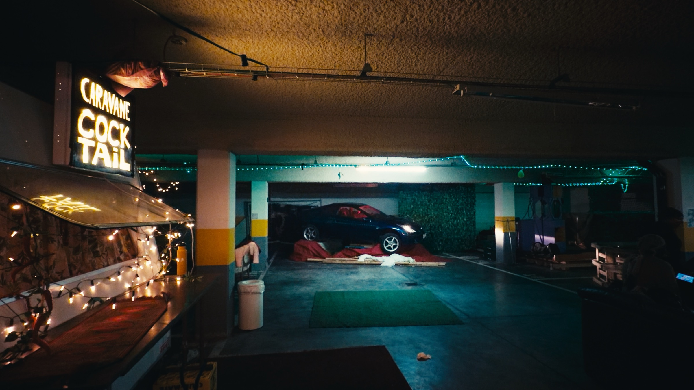

Directing, Documentaries
& Video
Our video team is made up of professionals with experience in cinema and documentary.

Still from “Thanks, Putin”
We work on Documentaries, Short Films, Music Videos, Live Sessions and Commercials.
Once a precise artistic direction is set, we are on set ourselves, which lets us remove the intermediate steps that can open gaps between the idea and the result.
Depending on the job we extend the team as needed, working with other professionals in the field.
Our process
- 01Script and storyboard
- 02Scouting, casting and permits
- 03Production plan and budget
- 04Shooting
- 05Edit, colour grading, post-production
- 06Master cuts for every platform
Got a project in mind?
Write to us →